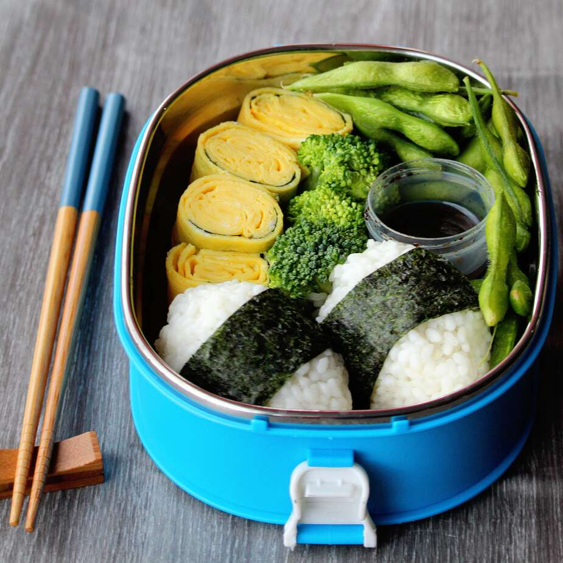

Tamagoyaki Bento Box

Description
Traditional Japanese bento for a delicious lunch far from sandwiches and chips. The onigiri can be formed into cute shapes or animal figures to surprise your kids with a fun lunch.
Ingredients
For the Onigiri:
- 3 ½ cups uncooked short-grain white rice
- 5 ¼ cups water
- 7 sheet nori (dry seaweed), or as needed
- ¼ cup and ½ tablespoon and ½ teaspoon bonito flakes, divided
- 2 tablespoons and 1 teaspoons white sesame seeds
- 2 tablespoons and 1 teaspoons black sesame seeds
For the Tamagoyaki:
- 14 large eggs
- 2 tablespoons and 1 teaspoons mirin (Japanese sweet wine)
- ⅞ teaspoon tamari
- 2 tablespoons and 1 teaspoons vegetable oil
- ¾ cup and 2 tablespoons tamari
- 2 tablespoons and 1 teaspoons freshly grated ginger
- ⅞ teaspoon wasabi paste
- 1 ¾ cups steamed broccoli florets
- 3 ½ cups cooked shelled edamame
Instructions
- Rinse rice with cool water until the water runs clear; drain. Bring rice and 3/4 cup water to a boil in a pot. Reduce heat and let simmer until water is absorbed, about 15 minutes. Let cool, 10 to 20 minutes.
- Cut the sheet of nori into two 1-inch strips; reserve the remainder of the sheet for making tamagoyaki.
- Wet your hands and form the cooled rice into 4 equal portions. Keep your hands wet to keep rice from sticking. Create an indention in one of the rice portions using your thumb. Fill the indention with 1 teaspoon bonito flakes. Top with another rice portion to close the onigiri. Form into an oval shape and wrap the middle with a strip of nori. Make another onigiri with the remaining ingredients. Sprinkle white and black sesame seeds on top. Place in a bento box.
- Whisk together the eggs, mirin, and 1/8 teaspoon tamari together in a bowl; divide into 3 portions. Cut remaining portion of nori sheet into four 1/2-inch strips.
- Heat oil in a small saucepan or square tamagoyaki pan over medium-high heat. Add 1/3 of the egg mixture and cook until almost firm, 2 to 3 minutes; if omelette is too firm, it won't stick together very well. Slide onto a plate. Add the 4 strips of nori to the pan with some space between each.
- Cook another 1/3 of the omelette the same way, but roll it up carefully in the saucepan with the nori. Slide the rolled-up omelette onto the edge of the first omelette. Cook the third omelette and roll it up, sliding it on top of the second omelette. Let cool enough to touch, about 5 minutes.
- Roll the entire layered omelette together with nori inside. Cut into 4 pieces. Place into the bento box alongside the onigiri.
- Mix 2 tablespoons tamari, ginger, and wasabi paste together in a bowl. Put the mixture into a portable container then put inside the bento box. Add the steamed broccoli and edamame.